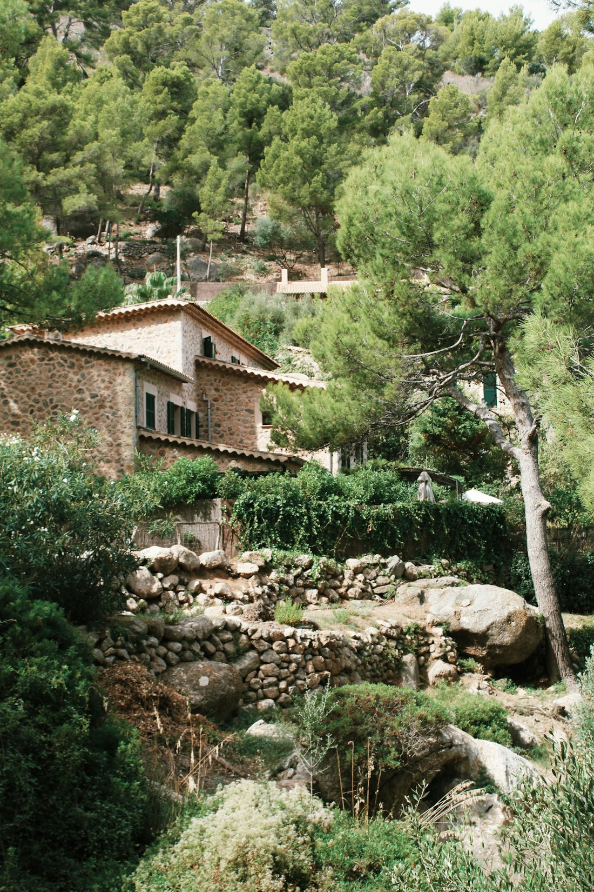

Ihre deutschsprachige Ansprechpartnerin vor Ort.
Ich kümmere mich um Ihr Zuhause auf Mallorca, während Sie nicht da sind: Kontrollgänge, Reinigung, Vorbereitung Ihrer Ankunft und alles, was rund ums Haus zu regeln ist.
- Seit 2023 auf Mallorca zu Hause
- Eine feste Ansprechpartnerin
- Rückmeldung mit Fotos nach jedem Besuch
Ihr Haus steht auf Mallorca. Sie meistens nicht.
Ein Sturm in der Nacht, ein tropfender Wasserhahn, eine Klimaanlage, die nicht mehr anspringt. Aus der Ferne erfahren Sie davon oft erst bei der Anreise. Dann beginnt der Urlaub mit Telefonaten statt mit dem ersten Kaffee auf der Terrasse.
Ich bin die Person, die vorher nachsieht. Ich habe Ihren Schlüssel, kenne Ihr Haus und melde mich, bevor aus einer Kleinigkeit ein Schaden wird. Auf Deutsch und ohne Umwege.

Drei Dinge, auf die Sie sich verlassen können
Zuverlässigkeit
Vereinbarte Termine finden statt. Nach jedem Besuch erhalten Sie eine kurze Rückmeldung mit Fotos, damit Sie sehen, was ich gesehen habe.
Sauberkeit
Ich reinige so, wie ich es in meinem eigenen Zuhause erwarte: gründlich und mit Blick für Ecken, Fugen und Details, die man erst beim zweiten Hinsehen bemerkt.
Partnerschaft
Sie haben eine feste Ansprechpartnerin statt wechselnder Gesichter. Ich sage ehrlich, was nötig ist und was nicht, und entscheide nichts über Ihren Kopf hinweg.
Vier Bausteine für Ihr Haus
Sie buchen, was Sie brauchen: einzeln oder als Rundum-Betreuung aus einer Hand.

Hausbetreuung und Kontrollgänge
Regelmäßige Besuche in Ihrer Abwesenheit: lüften, prüfen, Probleme früh erkennen.
Mehr erfahren
Reinigung
Von der regelmäßigen Pflege bis zur Grundreinigung, mit Liebe zum Detail.
Mehr erfahren
Ankunfts- und Abreiseservice
Ihr Haus ist vorbereitet, wenn Sie kommen, und versorgt, wenn Sie gehen.
Mehr erfahrenImmobilienservice
Schlüssel, Handwerker, Lieferungen: Ich koordiniere vor Ort, was Sie aus der Ferne nicht regeln können.
Mehr erfahrenIn vier Schritten zur Betreuung
Vom ersten Gespräch bis zum ersten Kontrollgang. Klar, persönlich und ohne Kleingedrucktes.
Kennenlernen
Sie schreiben mir oder rufen an und erzählen von Ihrem Haus. Das Gespräch ist kostenlos und unverbindlich.
Besichtigung
Ich sehe mir Ihre Immobilie an, am liebsten gemeinsam mit Ihnen. Wir gehen durch, worauf es ankommt und was Sie sich wünschen.
Ihr Betreuungsplan
Sie erhalten ein klares Angebot: welche Leistungen, wie oft und zu welchem Preis. Sie entscheiden in Ruhe.
Laufende Betreuung
Ich übernehme die Schlüssel und beginne. Nach jedem Besuch erhalten Sie eine Rückmeldung mit Fotos.

Ich bin Leoni.
Seit 2023 lebe ich auf Mallorca und betreue ein stetig wachsendes Portfolio an Immobilien im Raum Santanyí. Zu Beginn durfte ich einen bestehenden Kundenstamm übernehmen. Seitdem wächst er durch Vertrauen und Weiterempfehlungen.
Ich kümmere mich um Ihre Immobilie, als wäre es meine eigene. Damit Sie jede Sekunde auf der Insel sorgenfrei genießen können.
Was Eigentümer sagen
Hinweis: Diese Kundenstimmen sind ausgedacht. Sie zeigen, wie der Bereich aussieht, und werden durch echte Stimmen ersetzt.
„Seit Frau Pfadt nach unserem Haus sieht, fliegen wir entspannt zurück nach Hamburg. Nach jedem Besuch kommt eine Nachricht mit Fotos. Mehr brauchen wir nicht.“
Familie B., Hamburg · Haus in Cala Figuera„Wir kamen an, die Betten waren bezogen, der Kühlschrank gefüllt und auf der Terrasse lagen die Polster. So hat bei uns noch kein Urlaub angefangen.“
Sabine und Jörg K., München · Finca bei Es Llombards„Der Wasserschaden im Februar wäre uns erst zu Ostern aufgefallen. Leoni hat ihn beim Kontrollgang entdeckt, den Installateur geholt und uns alles auf Deutsch erklärt.“
Thomas R., Düsseldorf · Haus in SantanyíHäufige Fragen
Wie oft kommen Sie zu meinem Haus?
So oft, wie wir es vereinbaren: wöchentlich, alle zwei Wochen oder einmal im Monat. Nach starkem Unwetter sehe ich zusätzlich nach dem Haus.
Wie erfahre ich, was bei einem Besuch war?
Nach jedem Besuch erhalten Sie eine kurze Nachricht mit Fotos, per WhatsApp oder per E-Mail. So sehen Sie selbst, in welchem Zustand Ihr Haus ist.
Wo werden meine Schlüssel aufbewahrt?
Ihre Schlüssel werden sicher verwahrt und sind nur mit einem Code gekennzeichnet, nie mit Name oder Adresse. Ohne Ihre Zustimmung erhält niemand Zugang zu Ihrem Haus.
Was passiert im Notfall?
Ich melde mich sofort bei Ihnen, sichere, was sich sichern lässt, und stimme die nächsten Schritte mit Ihnen ab. Über größere Ausgaben entscheiden immer Sie.
Sorgenfreier Immobilienbesitz beginnt mit einer Nachricht.
Erzählen Sie mir von Ihrem Haus. Sie erhalten ein Angebot, das zu Ihrer Immobilie und Ihren Abwesenheiten passt. Unverbindlich und persönlich.